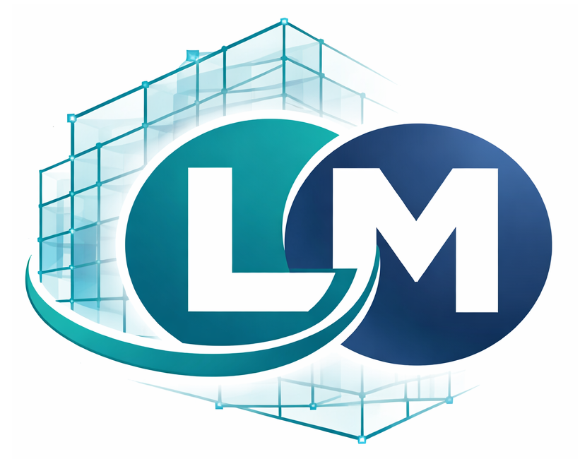
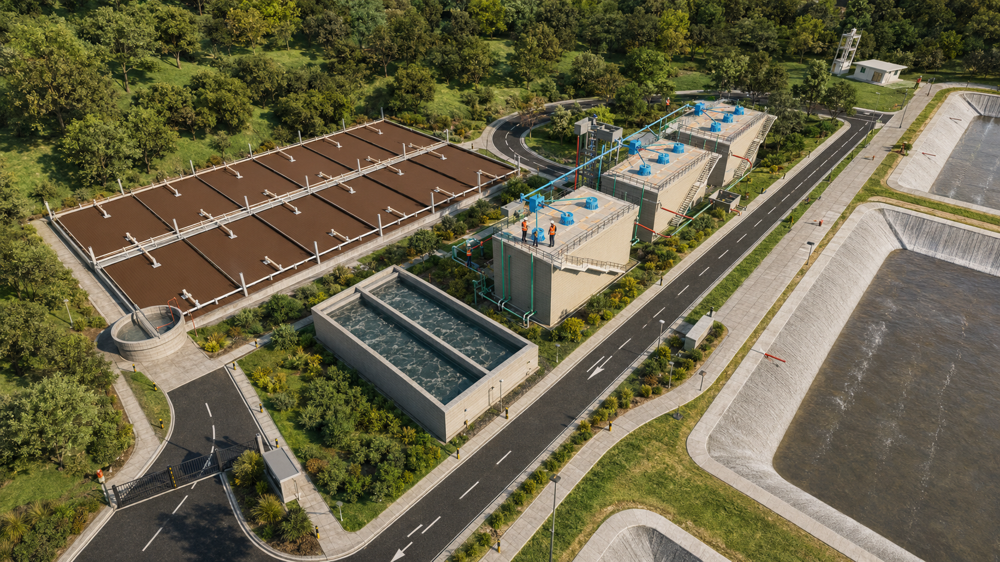

§ B
Click en cualquier imagen → vista ampliada con zoom
Galería del proyecto

N.02 Plano Interconexiones
Desliza horizontalmente · Toca cualquier imagen para ampliar con zoom

LM';">Expediente de saneamiento urbano en una ciudad de la provincia de Tocache, San Martín. Participé como modelador BIM de la parte hidráulica (interconexiones, reactores RAFA, modelo federado) y como apoyo en cálculos hidráulicos puntuales del sistema.

Click en la imagen para ampliarla
El expediente requería integrar tratamiento preliminar, reactores RAFA y redes de interconexión en planta. Trabajar solo con planos AutoCAD generaba interferencias detectadas tarde y reprocesos en metrados y costos.
Modelé en Revit la parte hidráulica: interconexiones del Sector 2, geometría de los reactores anaerobios de flujo ascendente (RAFA) y elementos auxiliares. Integré las disciplinas en un modelo federado y produje el recorrido virtual para validación con el equipo.
Interferencias detectadas antes de planos definitivos, planos de planta consistentes con el modelo 3D y recorrido virtual usado como herramienta de comunicación. El modelo quedó como base reutilizable para futuras revisiones.
Desliza horizontalmente · Toca cualquier imagen para ampliar con zoom
Modelado paramétrico en Revit de tuberías, accesorios, buzones y estructuras hidráulicas con familias adaptadas a la realidad del proyecto. Niveles de detalle ajustados para coordinación, no para render decorativo.
Verificaciones puntuales del sistema (pendientes, tirantes, tirante crítico, velocidades autolimpiantes) cruzadas con el dimensionamiento del expediente.
Integración del modelo hidráulico con arquitectura y estructuras del resto del equipo. Detección temprana de interferencias antes de la emisión definitiva de planos.
Recorrido virtual con Twinmotion sobre el modelo Revit, usado como medio de validación visual rápida con stakeholders no técnicos.
Las imágenes mostradas corresponden a entregables propios del rol BIM. Información comercial, datos personales del equipo y detalles contractuales del expediente se omiten por confidencialidad con la consultora y el cliente.